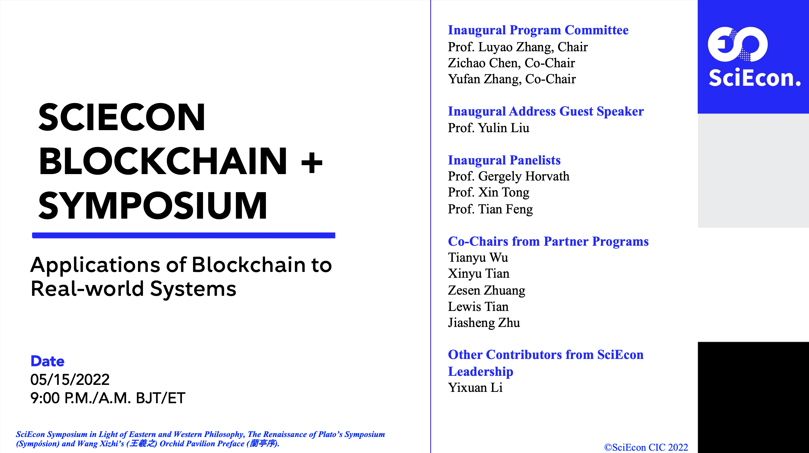

SciEcon Blockchain + Symposium
Applications of Blockchain to Real-world Systems
SciEcon Lab Incubator Program
2022 Spring

Watch SciEcon Blockchain + Symposium on SciEcon YouTube channel.
Read SciEcon Blockchain + Symposium Slides on DocSend.
Introduction to SciEcon Symposium and SciEcon Lab Incubator Program
At SciEcon, we host SciEcon Symposium in Light of Eastern and Western Philosophy, The Renaissance of Plato’s Symposium (Sympósion) and Wang Xizhi’s (王羲之) Orchid Pavilion Preface (蘭亭序).
SciEcon Lab Incubator Program is a philanthropy event that aims at cultivating research, innovation, and leadership among young scholars by incubating exploratory studies and symposiums on cutting-edge topics. Young scholars can join the program by proposing a research abstract in scopes and even applying for leadership positions. Research affiliates aim to publish insightful articles that identify research directions. In addition, Lab leaders shall contribute significantly to pushing the milestones, hosting the symposium, and publishing documentaries. We invite pioneers on the chosen cutting-edge topic as symposium panelists who resembles distinguished scholarship in all three aspects of research, innovation, and leadership. We expect to facilitate a conversation between young scholars and advanced panelists for future collaborations that benefit generations to come.
― Inaugural Program Chair Address by Dr. Luyao Zhang
Previous milestones
Web 3.0 symposium documentary on the Internet Computer: SciEcon NFT Symposium Autumn 2021
Exploratory research article samples published on Medium: Article1, Article2
Inaugural Program Committee
Prof. Luyao Zhang, Chair
Zichao Chen, Co-Chair
Yufan Zhang, Co-Chair
Inaugural Address Guest Speaker
Prof. Yulin Liu
Inaugural Panelists
Prof. Gergely Horvath
Prof. Xin Tong
Prof. Tian Feng
Co-Chairs from Partner Programs
Tianyu Wu
Xinyu Tian
Zesen Zhuang
Lewis Tian
Jiasheng Zhu
Other Contributors from SciEcon Leadership
Yixuan Li
Overview
Symposium Background
This seminar is hosted by the SciEcon Lab Incubator Program Committee, supervised by Professor Luyao Zhang, and proposed by the Blockchain + lab leaders: Josh Manto and Yutong Sun. As the newest lab in SciEcon, the Blockchain+ lab aims to host a feast of intellectual conversations where research affiliates discuss exploratory research with distinguished panelists centered around the cutting-edge topic of “Blockchain+” that connects blockchain to real-world applications and identify promising open questions for future explorations and collaborations. We will publish our symposium documentary as Open Educational Resources (OER) on Medium and Web 3.0.
Background of the Core Research Topic of the Lab
The core research topic centers on the applications of Blockchain in different areas. The first paper, Josh Manto, is centered on the applications of blockchain to decentralize the cloud computing field. The second paper, by Yutong Sun, focuses on the application of blockchain to supply chains and finance risk identification. The third paper by Tingyu Cai is about how blockchain can solve problems found in supply chains. The fourth paper by Yuming Gong features a proposal for a blockchain-based social media platform. The fifth paper by Yuxi Jiang features an analysis on how blockchain can solve financial fraud, and the last paper by Yu Cheng aims to understand how blockchain can revolutionize the financial industry.
Lab Project Overview
The project aims to understand and showcase the applications of blockchain to the field of cloud technology, the financial industry and anti-fraud tactics, social media, and the supply chain.
Symposium Sketch
The symposium comprises online presentations and discussion for 6 articles. Each presentation lasts 6 minutes, with around 20 minutes of panel discussion allotted after the presentation. Before the article presentations, SciEcon Lab Incubator Program Committee gives a short opening remarks on the SciEcon Symposium and SciEcon Lab Incubator Program. The Address Guest Speaker gives a presentation on one of the most popular promising applications of Blockchain, Metaverse.
Symposium Agenda
A Blockchain-based Decentralized Cloud Storage with “Keeper-and-Distributor” Systems
Author: Josh Manto
Title: Decentralizing the Cloud by Implementing Blockchain and “Keeper-and-Distributor” Systems
Medium Article Publication: NOT YET PUBLISHED
Abstract: The majority of cloud computing services today are managed and owned by major tech companies. Two major cybersecurity risks arise with cloud computing centralization: first, user data privacy issues, such as the unlawful selling of user data to third parties, and second, overall data security such as data breaches and hacks. In this paper, I propose a decentralized cloud storage model built on the blockchain that has a “keeper-and-distributor” system. This model is more secure due to its “keeper-and-distributor” feature and is able to respect user data privacy because the data audit trail is stored and accessible in the blockchain.
Blockchain Applications on the Supply Chain
Author: Tingyu Cai
Title: Popularly-claimed Advantages and Followed-up Suspicions Regarding the Real Applicability and Effectiveness
Medium Article Publication: NOT YET PUBLISHED
Abstract: The supply chain is a vital network for business production and delivery from suppliers to consumers. Due to the centralized architecture of its management system and the complicated process of transactions involving numerous intermediaries, the global supply chain has long been troubled by inefficiency and misconduct. Blockchain technology, on the other hand, has been popularly viewed as a promising tool to solve the supply chain problem due to its unique mechanism that brings transparency, security, and efficiency to the network. However, this article significantly argues that it might be too early to draw the conclusion that blockchain will guarantee a good performance after implementing it in the supply chain. In fact, it is even too early to conclude that blockchain can be successfully adopted by a fair number of firms and with proper scale. The paper first summarizes two key types of supply chain problems and the application potential of blockchain technology to solve them, and then proposes four fundamental questions as suspicions on real applicability and effectiveness. In the end, a list of potential future research directions will be presented.
The Imperative development and Challenges of Blockchain Technology in Finance
Author: Yu Cheng
Title: The Imperative development and Challenges of Blockchain Technology in Finance
Medium Article Publication: NOT YET PUBLISHED
Abstract: The concept "blockchain" originated from the decentralized public ledger technology of Bitcoin. Even in its infancy, blockchain technology has demonstrated its power to revolutionize various industries. Decentralization, transparency, and immutability are appealing to businesses across the world, but finance is leading the way in terms of the implementation of blockchain technology. In the process of exploring the application of blockchain, challenges and problems will inevitably arise at the same time.
Possible Improvements Made by Blockchain Technology to Social Media
Author: Yuming Gong
Title: Possible Improvements Made by Blockchain Technology to Social Media
Medium Article Publication: NOT YET PUBLISHED
Abstract: At present, with the rapid development of Internet information technology, social media and their large amount of information are showing explosive growth. At the same time, traditional social media has been utilized as a tool to spread fake news and misinformation, which brings with it other issues such as privacy security and information authenticity. There should be some solutions to ensure data security and to fact-check the information disseminated in the platform. It is foreseeable that the application of blockchain technology may trigger a new round of reform in the social media industry. This paper aims to summarize some drawbacks of traditional social media and explore how blockchain technology can be used as a tool to curb the spread of fake news and personal privacy as well as regulating and holding people accountable for these social problems. At the end of the paper, a case study is used explore the feasibility of applying blockchain technology to current social media industry
Supply Chain Finance Risk Identification and the Corrective Role of Blockchain
Author: Yutong Sun
Title: Supply Chain Finance Risk Identification and the Corrective Role of Blockchain
Medium Article Publication: NOT YET PUBLISHED
Abstract: The supply chain is an essential and important link in the production and distribution process, which revolves around the core companies, links upstream and downstream suppliers and distributors, and involves regulators and financial institutions, connecting them in a chain. Because supply chain financial service involves several enterprises and financial institutions, its risk is transmitted upstream and downstream with the trade between enterprises in the supply chain, making the risk cover the whole supply chain from a single enterprise. And blockchain, because of its transparent, irreversible, and open information characteristics, can be used to design supply chain information-sharing mechanisms, consensus mechanisms, and incentive mechanisms to help solve the potential risk problem of the supply chain. This paper summarizes and concludes the potential risks of the supply chain system after an extensive literature review, and analyzes how to use the functions and advantages of blockchain to correct these risks one by one. And at the end, a blockchain application scenario of a commercial bank in China is provided as a case study.
Analysis of the possibilities and difficulties of using blockchain technology: Is blockchain technology effective enough to prevent the occurrence of financial fraud?
Author: Yuxi Jiang
Title: Analysis of the possibilities and difficulties of using blockchain technology: Is blockchain technology effective enough to prevent the occurrence of financial fraud?
Medium Article Publication: NOT YET PUBLISHED
Abstract: In recent years, financial fraud has been a shared network problem that endangers individuals, enterprises, and institutions' psychology, reputation, and property safety. As an emerging technology, blockchain has the advantages of information stability and data confidentiality brought by decentralization. I will explore the possibilities and difficulties of blockchain applications in financial anti-fraud by combining the case of Everledger and JD.COM in diamond supply chain tracking and the related literature review.
Bios
Josh Manto
[LinkedIn]
DKU sophomore student majoring in Data Science | SciEcon Blockchain+ Lab Leader
Josh Manto is a sophomore student at DKU majoring in Data Science. He is the lab leader for SciEcon Research Lab. He has a solid foundation in Data Science, a wealth of experience in research, and has since managed two e-commerce startups to this day. His area of interest is in developing web3 and blockchain-based applications.
Yutong Sun
[LinkedIn]
DKU junior student majoring in Applied Mathematics | SciEcon Blockchain+ Lab Leader
I am Sun Yutong, a junior student at Duke Kunshan University majoring in Applied Mathematics and Computational Science. I am so glad and excited to be a part of the SciEcon Lab! My research interest is in financial technology and financial mathematics. Previously, I have done some research on commercial leverage ratios using machine learning models, and Blockchain, as one of the hottest research topics in FinTech, is also one of my research directions. I am interested in doing research on this topic from a mathematical point of view, such as applying the mean-field game model to analyze the centralization phenomenon of mining on blockchain.
Tingyu Cai
[LinkedIn]

DKU Sophomore Student majoring in Political Economy | SciEcon Blockchain+ Lab Member
Tingyu Cai is a sophomore majoring in Economics at Duke Kunshan University (dual degree with Duke University). He has a solid foundation in macroeconomic theories, and he is good at using Excel for data visualization and analysis. He is responsible, focused, and always passionate about learning new things. His research interests lie in areas including macroeconomic analysis, global trade, international affairs, industrial research, business strategic management, and marketing. He is currently working as a research team member under Professor Luyao Zhang’s Blockchain+ Research Program.
Yuming Gong (Lisa)
[LinkedIn]
DKU Sophomore majoring in Political Economy | SciEcon Blockchain+ Lab Member
Yuming Gong is a sophomore student at Duke Kunshan University (DKU). She majors in Political Economy with the track of Economics. She works as DKU ECE marketing Assistant and also serves as the head of DKU Football Association Publicity Department. As she often deals with all kinds of social media, she is concerned about the threat to public information security brought by the new blockchain social media. She wants to further explore the changes blockchain brings to social media and work on addressing some of this industry's pain points.
Yuxi Jiang (Trudy)
[LinkedIn]
DKU Sophmore majoring in Political Economy | SciEcon Blockchain+ Lab Member
Yuxi is now a sophomore student majoring in Political Economy with the ECON track at Duke Kunshan University (DKU). She is passionate about interdisciplinary studies of economics, especially those related to Finance, Governance, Global Health, and Behavioral Science. She is now a newcomer in research and wants to do research in the above areas of interest.
Yu Cheng (Gloria)
[LinkedIn]
DKU Sophomore majoring in Data Science | SciEcon Blockchain+ Lab Member
I am a UG 2024 student majoring in Data Science. I have basic proficiency in Python, Matlab, and Java. I have experience in leadership and research and am the research assistant for the DKU-Fudan Econ Hist project. I take a profound interest in Data + Econ and the specific direction is still being explored.